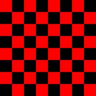

Solution for Programming Exercise 3.8
This page contains a sample solution to one of the exercises from Introduction to Programming Using Java.
Exercise 3.8:
Write a GUI program that draws a checkerboard. Base your solution on the sample program SimpleGraphicsStarter.java You will draw the checkerboard in the drawPicture() subroutine, after erasing the code that it already contains.
The checkerboard should be 400-by-400 pixels. You can change the size of the drawing area in SimpleGraphicsStarter.java by modifying the first two lines of the start() subroutine to set width and height to 400 instead of 800 and 600. A checkerboard contains 8 rows and 8 columns of squares. If the size of the drawing area is 400, that means that each square should be 50-by-50 pixels. The squares are red and black (or whatever other colors you choose). Here is a tricky way to determine whether a given square should be red or black: The rows and columns can be thought of as numbered from 0 to 7. If the row number of the square and the column number of the square are either both even or both odd, then the square is red. Otherwise, it is black. Note that a square is just a rectangle in which the height is equal to the width, so you can use the subroutine g.fillRect() to draw the squares. Here is a reduced-size image of the checkerboard that you want to draw:

The basic algorithm is obvious:
for each row of the checkerboard:
Draw all the squares in that row
Since any given row contains eight squares, one in each column of the checkerboard, we can expand the body of the for loop into another for loop:
for each of the eight rows of the checkerboard:
for each of the eight columns:
Draw the square in that row and column
Each square is a rectangle with height 50 and width 50, so it can be drawn with the command g.fillRect(x,y,50,50), where x and y are the coordinates of the top-left corner of the square. Before drawing the square, we have to determine whether it should be red or black, and we have to set the correct color with g.setColor. So, the algorithm becomes
for each row on the checkerboard:
for each of the eight columns:
Compute x,y for the top-left corner of the square
if it's a red square:
g.setFill(Color.RED)
else
g.setFill(Color.BLACK)
g.fillRect(x,y,50,50)
The top of the first row of squares is at y=0. Since each square is 50 pixels high, the top of the second row is at y=50, followed by 100 for the third row, then 150, 200, 250, 300, and 350. If we assume that the rows are numbered 0, 1, 2, ..., 7, then the tops are given by y = row*50, where row is the row number. (If you number the rows 1, 2, ..., 8, the formula would be (row-1)*20. The simpler formula in this and in many similar cases is one reason why computer scientists like to start counting with 0 instead of 1.) Similarly, the left edge of the squares in column col is given by x = col*50, where again the columns are numbered 0, 1, 2, ..., 7. I'll use "for (row=0; row<8; row++)" to count off the rows, rather than the equivalent "for (row=0; row<=7; row++)". The 8 reminds me that I am counting off the eight numbers 0, 1, 2, ..., 7. Again, this is typical computer science style.
The only problem remaining is how to determine whether the square is red. As noted in the exercise, a square is red if row and col are either both even or both odd. Since an integer N is even if N%2 is 0, the test could be expressed as
if ((row%2 == 0 && col%2 == 0) || (row%2 == 1 && col%2 == 1))
However, note that this is the same as asking whether row%2 and col%2 have the same value. So the test can be written more simply as "if (row%2 == col%2)". Putting this all together into syntactically correct Java code, the algorithm becomes
for ( row = 0; row < 8; row++ ) {
for ( col = 0; col < 8; col++ ) {
x = 50*col;
y = 50*row;
if ( (row % 2) == (col % 2) )
g.setFill(Color.RED);
else
g.setFill(Color.BLACK);
g.fillRect(x,y,50,50);
}
}
Of course, the variables row, col, x, and y have to be declared to be of type int. Then, the code goes into the body of the drawPicture()subroutine.
The complete program is shown below. In the original program, the size of the drawing area was 800-by-600. As noted in a comment, to change the size to 400-by-400, I had to change the first two lines in the main routine, replacing 800 and 600 by 400. And I changed the title of the window to "Checkerboard" in another line in main().
I also changed the name of the class from SimpleGraphicsStarter to Checkerboard. Remember that this also requires changing the name of the file from SimpleGraphicsStarter.java to Checkerboard.java.
import javafx.application.Application;
import javafx.scene.layout.BorderPane;
import javafx.scene.Scene;
import javafx.stage.Stage;
import javafx.scene.canvas.Canvas;
import javafx.scene.canvas.GraphicsContext;
import javafx.scene.paint.Color;
/**
* This program draws a checkerboard
*/
public class Checkerboard extends Application {
/**
* Draws a picture. The parameters width and height give the size
* of the drawing area, in pixels.
*/
public void drawPicture(GraphicsContext g, int width, int height) {
int row; // Row number, from 0 to 7
int col; // Column number, from 0 to 7
int x,y; // Top-left corner of square
for ( row = 0; row < 8; row++ ) {
for ( col = 0; col < 8; col++) {
x = col * 50;
y = row * 50;
if ( (row % 2) == (col % 2) )
g.setFill(Color.RED);
else
g.setFill(Color.BLACK);
g.fillRect(x, y, 50, 50);
}
}
} // end drawPicture()
//------ Implementation details: DO NOT EXPECT TO UNDERSTAND THIS ------
public void start(Stage stage) {
int width = 400; // The width of the image. You can modify this value!
int height = 400; // The height of the image. You can modify this value!
Canvas canvas = new Canvas(width,height);
drawPicture(canvas.getGraphicsContext2D(), width, height);
BorderPane root = new BorderPane(canvas);
root.setStyle("-fx-border-width: 4px; -fx-border-color: #444");
Scene scene = new Scene(root);
stage.setScene(scene);
stage.setTitle("Checkerboard"); // STRING APPEARS IN WINDOW TITLEBAR!
stage.show();
stage.setResizable(false);
}
public static void main(String[] args) {
launch();
}
} // end Checkerboard